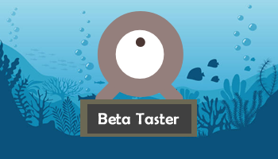

Este 29 de octubre se lanzó en la plataformas de Steam, Itch.io, PlayStore y AppStore nuestro primer videojuegos ("Dodge the Creeps!"). Ha alcanzado un total de 125 reviews en Steam en su primer dí de lanzamiento. Así mismo, obvtuvo 1800 descargas en Steam, 14 en Itch.io, 2300 en PlaySotre, y 700 en AppStore; en total 4814.
Gracias a todos ustdes por habernos apoyado desde el comienzo :)

Para culminar con la última fase del desarrollo de "Dodge the Creeps!", Delta Games requiere el apoyo de personas que gusten probar la Beta del juego para procedmiento decalidad y búsqueda de bugs que puedan dañar la experiencia del juego. ¿Quieres ser Beta Tester? Mándanos un mensaje para tomarte en cuenta.

Equipo Delta ha podido acelerar el desarrollo del juego, alcanzando un mayor porcentaje de avance. Falta optimizar el juego y agregar elementos para hacerlo más juice.
Su nombre es "Dodge the Creeps!", un juego Point and Clic y Habilidad para pasar el rato. Hoy se inagura el inicio del diseño de nuestra Opera Prima.
Dodge the Creeps!